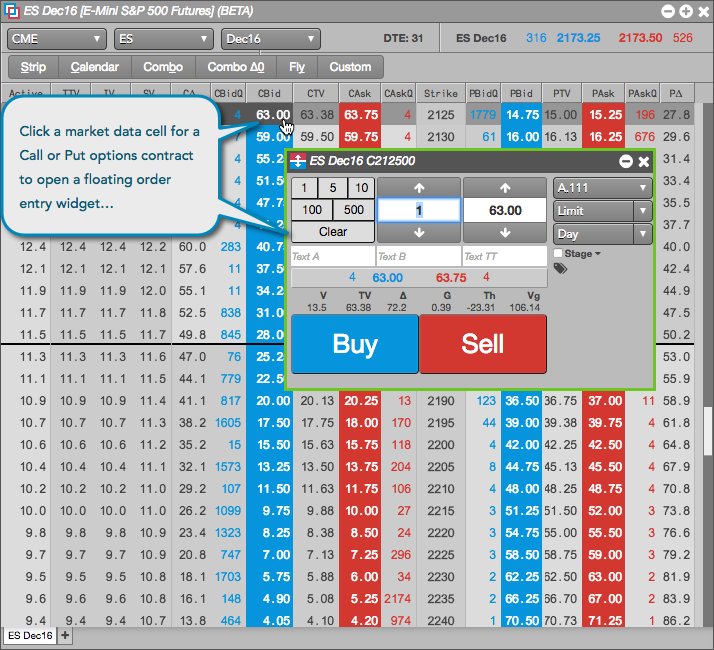
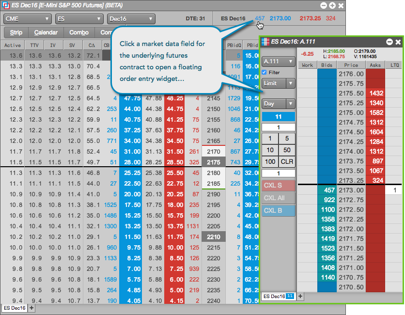
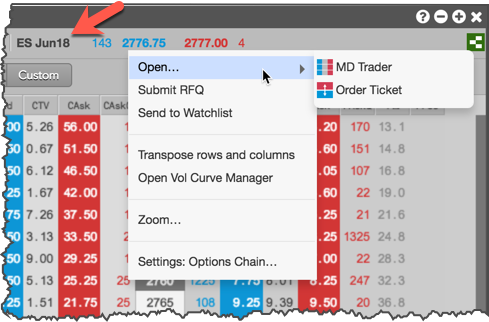
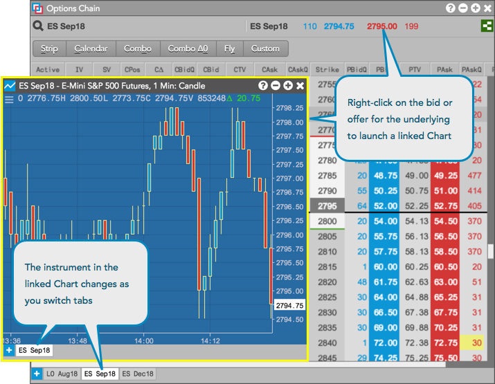

You can trade Call or Put options contracts or the underlying futures contract directly from the Options Chain. To make a trade, click a market data value for the options or futures contract in the Options Chain to open an Order Ticket or MD Trader widget as a Floating Order Entry widget.
When you click a cell in the Bid/Ask price or quantity columns for a Call or Put contract, a floating order entry widget opens pre-populated with the selected value so you can quickly enter an order. Based on the Order Preferences, either an Order Ticket or MD Trader widget opens.

When you click the Bid/Ask price or quantity for the underlying futures contract, a floating order entry widget opens pre-populated with the selected value so you can quickly enter an order. Based on the Orders Preferences, either an Order Ticket or MD Trader widget opens.

In addition, you can right-click the Bid/Ask price for the underlying futures contract and select Open to choose either MD Trader or the Order Ticket when trading the underlying in the Options Chain.

The same position risk checks for futures contracts are also applied to options contracts, but the calls and puts are treated as separate products (including all expiries and strikes). The same is true for margin on options and options strategies. That is, the margin applied for futures and spreads also applies to options, but calls and puts are treated as separate products.
P/L can be calculated using the theoretical call or put options value. In the Positions widget context menu settings, show the Mark to Theo column to display open P/L calculated with the theoretical options value.
To display a Chart for the underlying instrument in the Options Chain, right-click on the best bid or offer for the underlying future and click Launch linked... | Chart from the context menu.
If the Options Chain contains more than one tab, the instrument displayed in the Chart will update when you switch tabs. If another Options Chain widget is open in your workspace, switching focus to that widget will also update the instrument in the linked Chart.
